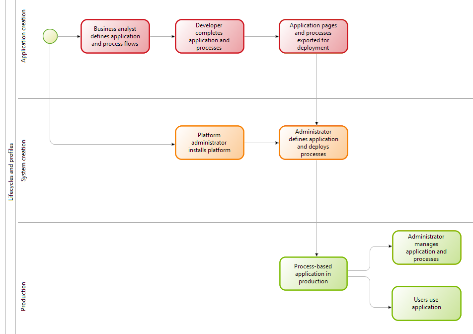

Lifecycle and profiles
This page explains the lifecycle of creating an application or a process using Bonita and putting it into production. At different stages in the lifecycle, different people with different knowledge and skills play roles. These people are identified by profiles.

There are three major phases in the lifecycle.This page introduces these three phases, and explains how the Bonita components use components to manage the features presented to users.
Application creation phase
During this phase, the business analyst specifies the processes that are in the application and creates the process diagrams. The application developer takes the specification of each process and creates a running process, adding forms, scripts or Java code if required. Each process is tested and debugged. When a process is complete, it is exported ready for deployment.
This phase needs only the Bonita Studio component of Bonita. See the Bonita Studio installation overview for details of how to install Bonita Studio for process creation.
The application developer also creates the application pages. When the pages are complete, they are exported and deployed in Bonita Portal. The application developer then builds the application, specifying the menus and navigation.
System creation phase
During this phase, which typically runs in parallel with the end of the application creation phase, the platform administrator prepares the infrastructure needed to support the deployed application. This infrastructure includes Bonita, and prerequisites such as a database and an application server. There are many options for how Bonita can be installed: see the Installation overview for details.
Preparing the system also includes defining the organization, with all the users, groups, and roles required for running processes and applications. Bonita Studio contains an example organization, ACME, which you can use for testing.
When configuration is complete, the system is ready for application deployment. The administrator deploys the processes and the application pages, and updates the configuration as needed, including mapping process actors to users in the organization.
Production phase
To deploy a process, you import it into Bonita Portal and start it. After the process is started, process instances can be started. The details of how process instances are started depend on the process definition.
To deploy an application, you import pages into Bonita Portal and then use the application builder to specify the application menus and navigation.
After deployment, you can use the Bonita Portal live update options to update an application or process that is in production.
Profiles and Bonita components
Bonita Studio and Bonita Portal manage the features available according to the profile of the user.
In Bonita Studio, a user selects a profile at login, and can change profile at any time. The application developer profile gives access to all features of Bonita Studio. You can also configure the features that are visible to your profile, hiding items that are not relevant to your activity, to make the interface cleaner and easier to navigate.
In Bonita Portal, a profile is associated to a login, and by default only a user with the administrator profile can change the profile of a user. A user can have any number of profiles. It is also possible to define custom profiles.